The idea
One beam ripples to crawl
and snaps through to jump.
EBUG has one thin carbon-fiber beam on each side, held at both ends by servo motors. Driven gently, the beam ripples, and its low point pushes the robot along the ground. Driven past its buckling limit, it snaps through to its other shape and throws the robot into the air.
Besides the two beams, it has four servos and a 3D-printed frame. EBUG costs under $5 to build and weighs 62 g. EBUG PRO, with stronger servos, costs about $30 and weighs 59 g.
01 / Why both modes
Crawl,
or jump?
Why should a small robot be able to do both?
Caterpillars crawl over sand, grass and concrete by undulating their bodies; locusts jump over pebbles and leaf litter; crickets do both, and move where one mode alone would not be enough. A robot that can both crawl and jump can likewise cover more kinds of ground.
Robots that do both usually combine a separate mechanism for each mode, which makes their mechanics and control complex. Very light robots driven by actuators of high energy density, or by outside stimuli, move well but recover slowly between moves and find it hard to combine modes. Elastic beams bend and store energy, so they can make several kinds of motion with few actuators; EBUG uses them for both.
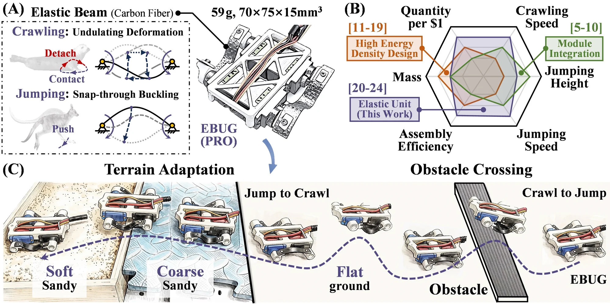
02 / Principle
One beam,
two modes.
How does the same beam make the robot crawl and jump?
Each beam is held at both ends by a servo. Turning the two ends back and forth a quarter period apart makes the beam ripple. A region in the middle of the beam then moves up and down: it touches the ground, pushes on it without slipping, and lifts off again, so the robot moves forward. If that region stays on the ground, the robot only rocks back and forth.
Jumping uses the same beam differently. The servo at one end, the restriction end, turns to a set angle, the restriction angle θr. The servo at the other end turns until the beam nears its buckling limit, then a little further, and the beam snaps through from a high-energy shape to a low-energy one, often in about 10 ms. If it touches the ground while snapping, it pushes the robot into the air.
Ripple
Below its buckling limit, the beam ripples; its low point pushes on the ground and lifts off
Snap through
Driven past the limit, the beam flips to its other shape in about 10 ms
Take off
The snapping beam pushes on the ground and throws the robot into the air
03 / Modeling
Sizing
the beam.
How long should the beam be?
To size the beam, the authors model it as a chain of short rigid links joined by elastic joints, and solve the resulting equations by Newton–Raphson with an analytical gradient. A static model gives the beam's shape for given end angles, with the robot's weight and friction at the contact; a dynamic model follows the snap-through and the push on the ground.
The analysis uses the characteristic length λ, the distance between the two joints over the length of the beam. A larger λ gives a longer crawling stride ΔL, but the servos' torque limit caps it, and the robot must sit low enough for the beam's low point to reach the ground. For jumping, the ideal jump height H and distance D both rise with the restriction angle θr, and both are larger with a smaller λ.
So crawling favors a large λ and jumping a small one. The authors put jumping first and chose λ = 0.87, within the height and torque limits, with the joints 6 mm above the ground and 50 mm apart.

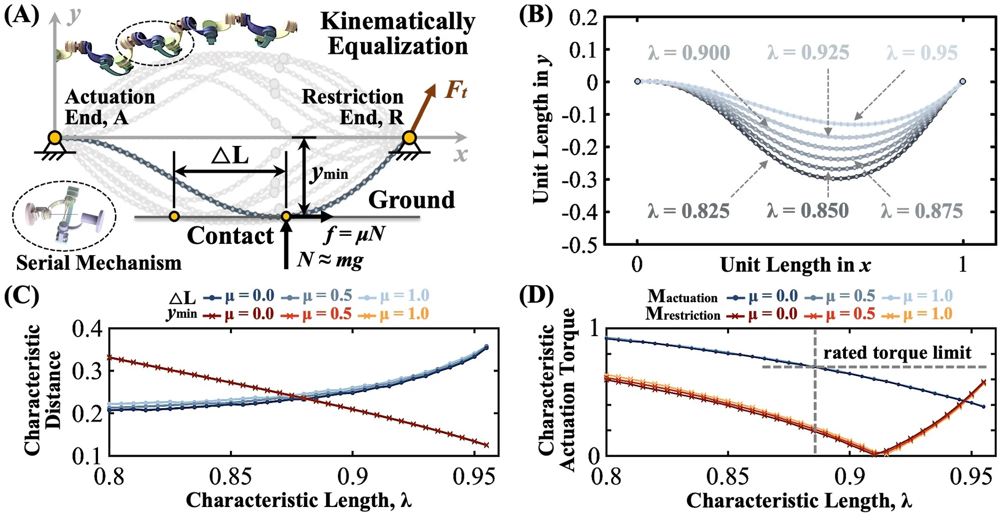

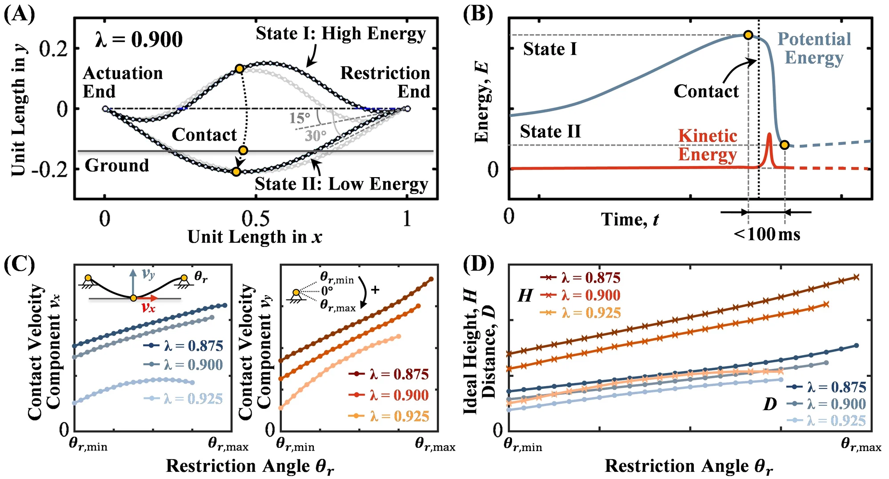
04 / Hardware
Two robots,
four servos each.
What is inside EBUG?
Each robot has two carbon-fiber beams, chosen for their elasticity and because they are easy to make, and four servos, two per beam, on a carved 3D-printed PLA base. A Xiao BLE microcontroller drives the servos and is controlled from a desktop computer. A DC power supply feeds the servos, and a buck module gives the microcontroller 3.3 V. Power and commands come over a cable.
EBUG uses two SG90 and two MG90S servos, the cheapest that are small and light yet give a large torque (2.0 kg·cm at 5 V). EBUG weighs 62 g, measures 87 × 84 × 16 mm and costs under $5 to build. EBUG PRO uses waterproof PTK 7465W servos, rated at up to 5.8 kg·cm at 8.4 V, and a lighter base; it weighs 59 g, measures 70 × 75 × 15 mm and costs about $30.
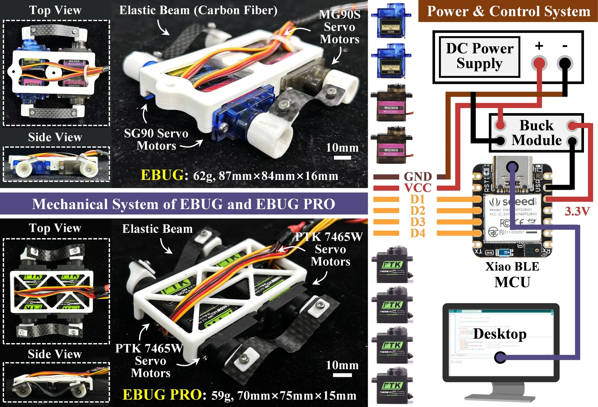
05 / Performance
Crawling, jumping
and turning.
How fast does it crawl, and how high does it jump?
With its servos at full speed, about 1 ms per degree, EBUG PRO crawled on fabric at about 28 mm/s, or 0.4 body lengths per second (0.4 BL/s). On each side the rear servo leads the front one by a quarter period, and the two sides are half a period apart, so one beam touches down while the other is in the air.
To turn while crawling, one servo's motion is shifted in phase by half a period, so the beam on that side ripples the other way and EBUG PRO turns in place: right at 18°/s and left at 16°/s. The authors attribute the difference to small mismatches between the two sides, such as beam length, assembly errors and twisting of the beams.
For a jump, the restriction angle θr sets how the beam is bent before it snaps. With θr at 5°, 25° and 45°, a single jump of EBUG PRO rose 28, 48 and 61 mm and carried it 30, 51 and 60 mm forward. Its highest jump, 61 mm, is 4.1 times its body thickness (4.1 BT); EBUG, with its weaker servos, reached 32 mm (2.0 BT).
The two beams snap in turn. On fabric, with θr = 20°, EBUG PRO jumped about once every 800 ms and moved at 56 mm/s (0.8 BL/s) over its first two jumps; on a smooth metal plate it reached 106.1 mm/s (1.5 BL/s). Jumping turns come from unequal restriction angles: 30° on the outer side of the turn and 10° on the inner side, so the outer beam pushes harder.

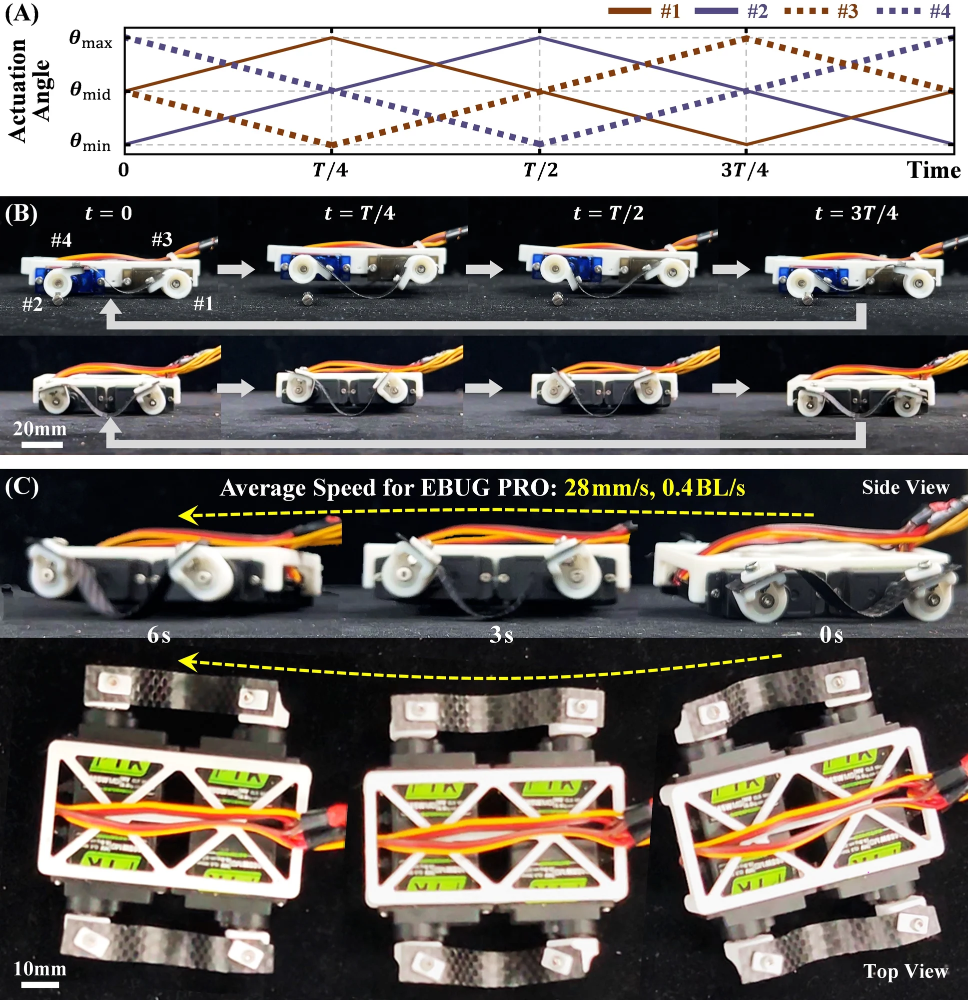

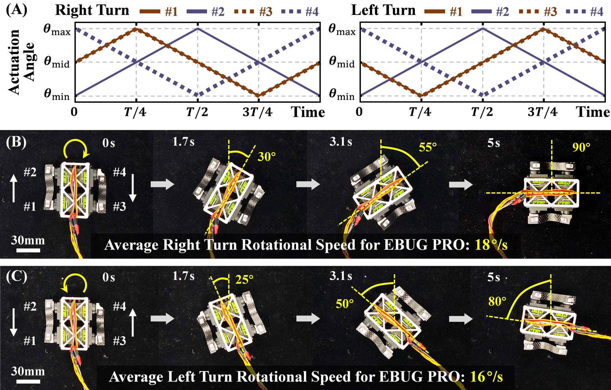

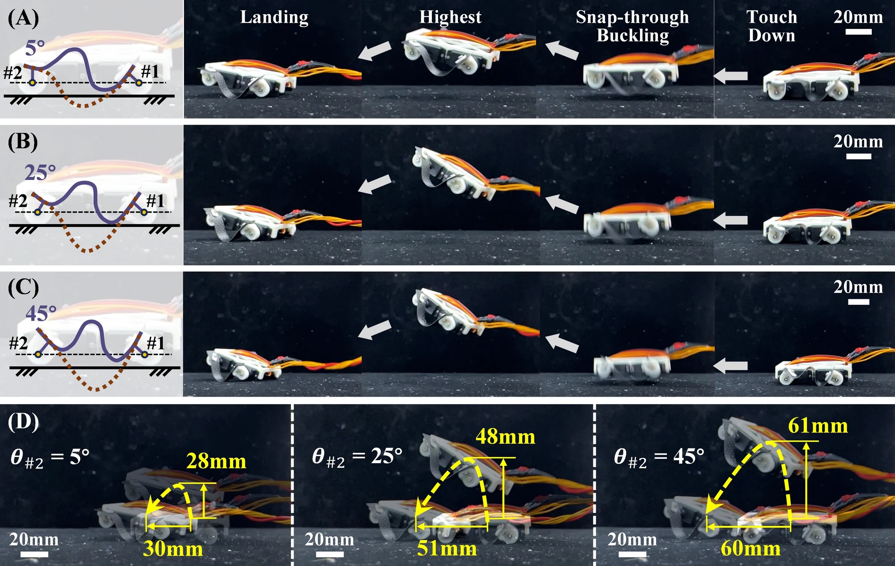

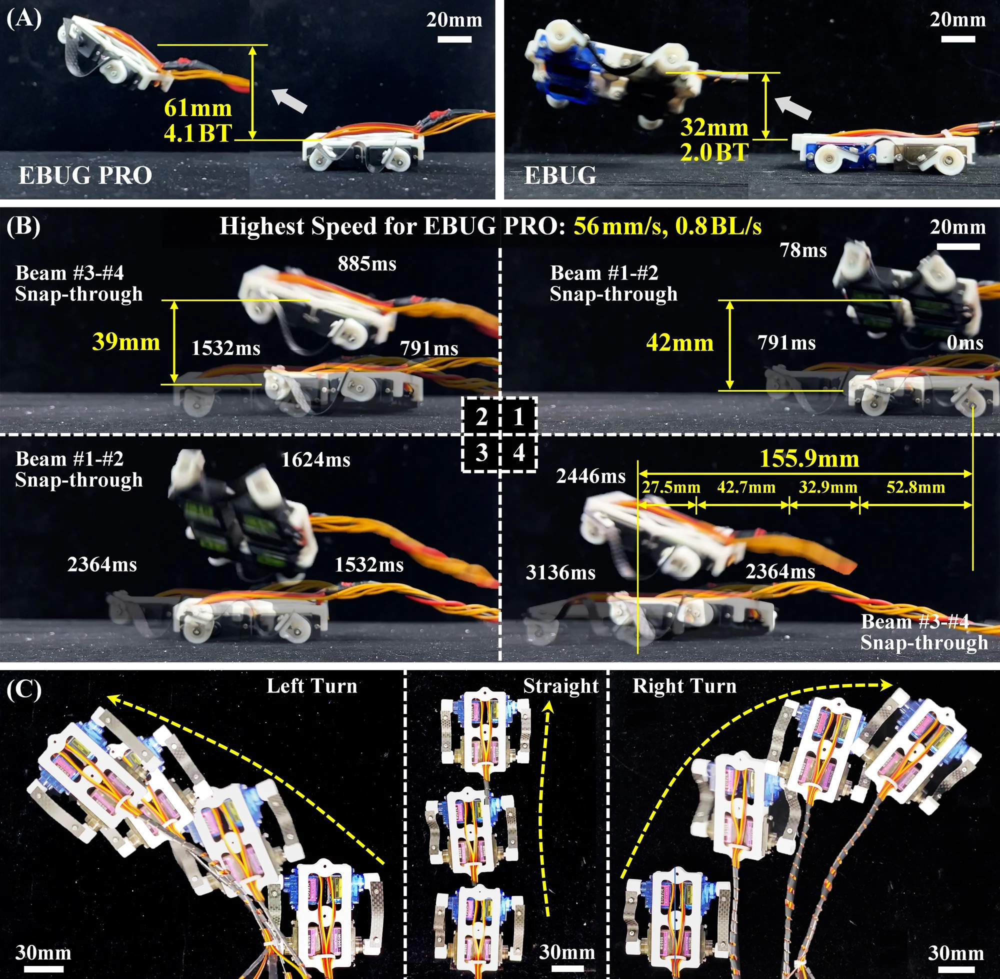
06 / Terrain and obstacles
Choosing the mode
for the ground.
When is crawling better than jumping?
The two modes suit different ground. On the smooth metal plate, EBUG PRO crawled at only 20.9 mm/s, slower than on fabric, because crawling needs friction; jumping wastes less energy there and was five times faster, at 106.1 mm/s. Crawling, though slower, is the steadier of the two.
On sand, jumping fails: the snap throws the sand instead, and EBUG only hops in place. Crawling still moves it, at 7.9 mm/s on flat sand and 7.6 mm/s up a 7° slope. On a foam board EBUG crawls at 12.1 mm/s, and at 7.3 mm/s up a 15° slope.
Jumping, in turn, gets EBUG PRO over obstacles it cannot crawl over: a 5 × 5 mm strip in one jump and a 35 × 7 mm one in two. The highest obstacle it crosses at a high success rate is 0.5 BT. Where it lands decides whether the next jump works, so it should start close to the obstacle.
In the full demonstrations, EBUG jumps across fabric for speed, switches to crawling to cross the sloped foam board more steadily, and keeps crawling into the sand. EBUG PRO crawls up to an obstacle until it bumps it, crosses with several jumps and crawls on.
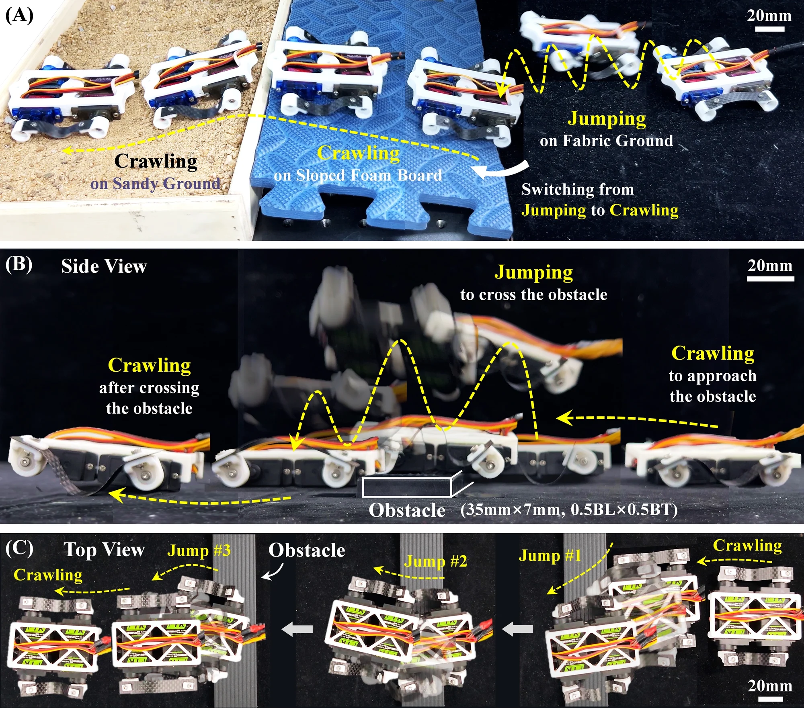
See the terrain and obstacle tests
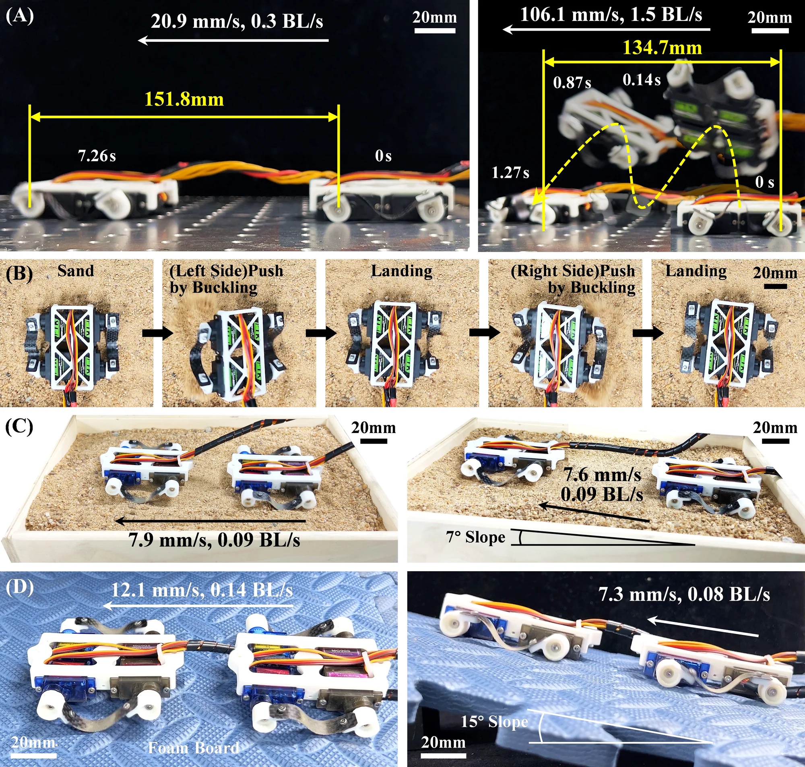
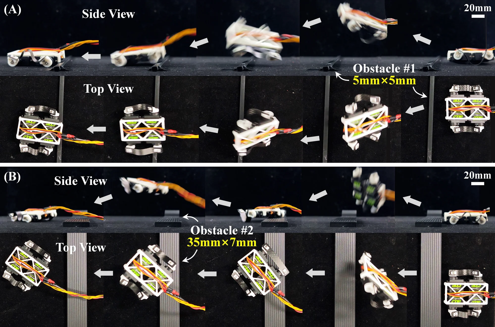
Questions & answers
Common questions.
Why not jump everywhere?
On sand, the snap throws the sand instead of the robot, which only hops in place. Crawling is also steadier, though slower: in the terrain demonstration, EBUG switched to crawling on the sloped foam board, where jumping would still have worked.
Why do the two beams snap one after the other?
Snapping both at once would release more energy and push the robot higher and farther, but small differences between the two sides keep them from triggering together, and energy is wasted. Snapping in turn uses the energy more efficiently, one jump per beam.
How does it turn?
When crawling, one servo's motion is shifted in phase by half a period, so the beam on that side ripples the other way and the robot turns in place. When jumping, the two sides get different restriction angles, 30° on the outer side of the turn and 10° on the inner side, so the outer beam pushes harder.
What is the difference between EBUG and EBUG PRO?
The servos. EBUG uses the cheapest small servos and costs under $5 to build. EBUG PRO uses stronger, faster, waterproof servos and jumps higher, 61 mm against 32 mm, but costs about $30.
What are its limits?
Both robots are tethered: power and commands come over a cable, and batteries for an untethered robot are future work. The two sides never match exactly, because of manufacturing and assembly errors and motor inaccuracy; this matters little for crawling but much for jumping. The beam can also twist and push sideways, as in Fig. 12(A). On water, EBUG PRO with wider beams and a foam board moved at only 1.9 mm/s, and the thicker body jumps lower.
See the tests for future work
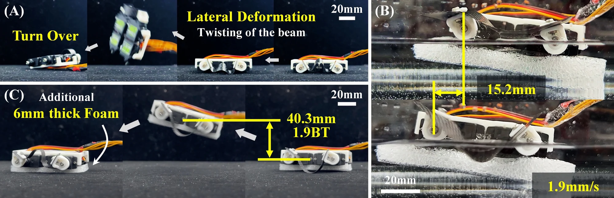
Paper & authors
Crawling and jumping
from elastic beams.
EBUG: Elastic-beam Buckling and Undulating Generation for Multi-modal Robot Locomotion in Environmental Exploration
Siyue Yao, Hao Li, Yuliang Lu, Chenhao Wu, Mark R. Cutkosky, and Genliang Chen.
IEEE/RSJ International Conference on Intelligent Robots and Systems (IROS), 2026.
Citation / BibTeX
@inproceedings{yao2026ebug,
title = {{EBUG}: Elastic-beam Buckling and Undulating Generation for Multi-modal Robot Locomotion in Environmental Exploration},
author = {Yao, Siyue and Li, Hao and Lu, Yuliang and Wu, Chenhao and Cutkosky, Mark R. and Chen, Genliang},
booktitle = {2026 IEEE/RSJ International Conference on Intelligent Robots and Systems (IROS)},
year = {2026}
}Full affiliations
- Shanghai Key Laboratory of Digital Manufacture for Thin-Walled Structures, Shanghai Jiao Tong University, Shanghai, China
- Shanghai Key Laboratory of Intelligent Robotics, Shanghai Jiao Tong University, Shanghai, China
- META Robotics Institute, Shanghai Jiao Tong University, Shanghai, China
- State Key Laboratory of Mechanical Systems and Vibration, Shanghai Jiao Tong University, Shanghai, China
- Department of Mechanical Engineering, Stanford University, USA
* Corresponding author: Genliang Chen
Supplementary video
Watch the full video.
The supplementary video introduces EBUG and EBUG PRO, then shows them crawling and turning. It then shows jumps at three restriction angles, on fabric and on a smooth plate, jumping turns, the terrain run and the obstacle crossing.